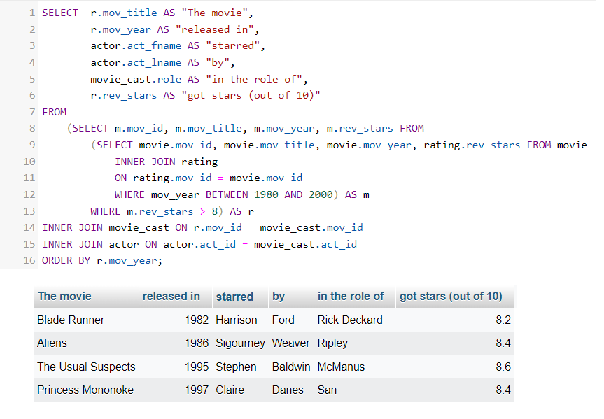
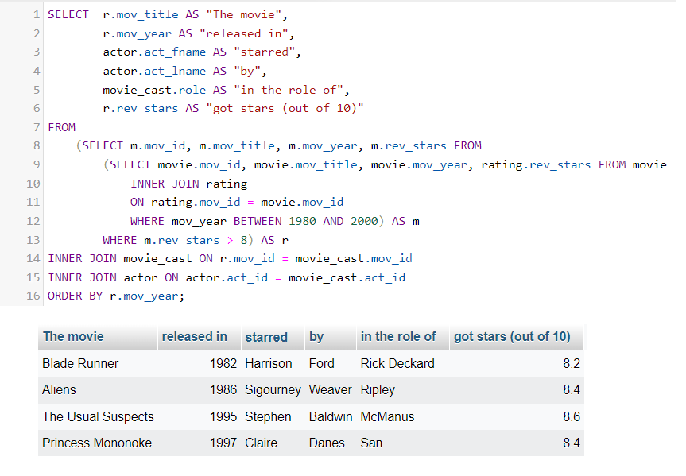

Example database project to show the use of subqueries
First selecting the movies from between '80 and 2000
SELECT movie.mov_id, movie.mov_title, movie.mov_year, rating.rev_stars
FROM movie
INNER JOIN rating
ON rating.mov_id = movie.mov_id
WHERE mov_year BETWEEN 1980 AND 2000
Filtering those with good rating (above 8)
SELECT m.mov_id, m.mov_title, m.mov_year, m.rev_stars FROM
(SELECT movie.mov_id, movie.mov_title, movie.mov_year, rating.rev_stars FROM movie
INNER JOIN rating
ON rating.mov_id = movie.mov_id
WHERE mov_year BETWEEN 1980 AND 2000) AS m
WHERE m.rev_stars > 8
Finishing by connecting the movies to the actors and their roles
SELECT r.mov_title AS "The movie",
r.mov_year AS "released in",
actor.act_fname AS "starred",
actor.act_lname AS "by",
movie_cast.role AS "in the role of",
r.rev_stars AS "got stars (out of 10)"
FROM
(SELECT m.mov_id, m.mov_title, m.mov_year, m.rev_stars FROM
(SELECT movie.mov_id, movie.mov_title, movie.mov_year, rating.rev_stars FROM movie
INNER JOIN rating
ON rating.mov_id = movie.mov_id
WHERE mov_year BETWEEN 1980 AND 2000) AS m
WHERE m.rev_stars > 8) AS r
INNER JOIN movie_cast ON r.mov_id = movie_cast.mov_id
INNER JOIN actor ON actor.act_id = movie_cast.act_id
ORDER BY r.mov_year;
 
